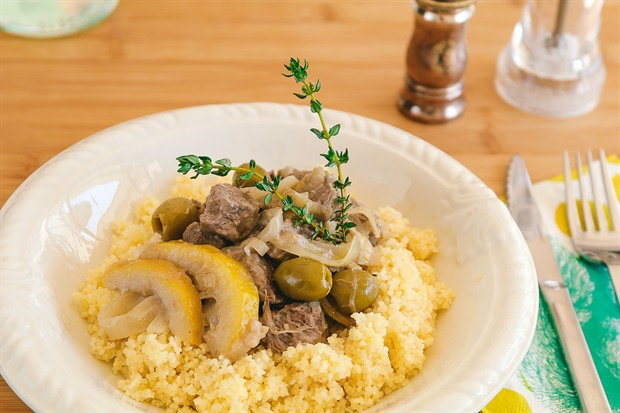

Cacerola de ternera

Ingredientes
800gr de paleta o similar
150ml de vino blanco
1 limón
100gr de aceitunas verdes descarozadas
1 cebolla
2 dientes de ajo
Tomillo
Sal & pimienta
Preparacion
Filetear la cebolla y los dientes de ajo y cocinar en una olla hasta que queden traslucidos Agregar la carne cortada en cubos grandes y cocinar durante 5min revolviendo para que la carne se dore en todos sus lados. Agregar el vino blanco con el tomillo y dejar que rompa hervor. Una vez logrado el 1er hervor, bajar a fuego medio y agregar las aceitunas y el limón cortado en rodajas. Tapar y cocinar durante 45min aprox. Salpimentar Servir con couscous